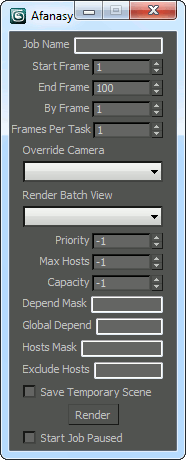

Afanasy in 3D Studio MAX
Afanasy Window
CGRU - > Afanasy...

- Job Name - Job name. Scene name by default.
- Start Frame - First frame to render.
- End Frame - Last frame to render.
- By Frame - Render every Nth frame.
- Frames Per Task - Number of frames in one task.
- Override camera - Select camera to render.
- Render Batch View - Select batch view to render.
- Priority - Job order in user job list, '-1' - use default priority.
- Max Hosts - Maximum number of hosts job can capture (running tasks limit), '-1' - no limit.
- Capacity - Job tasks capacity, '-1' - use default value.
- Depend Mask - Wait same user jobs names pattern.
- Global Depend - Wait any user jobs names pattern.
- Hosts Mask - Job can run only on hosts which names match this pattern.
- Exclude Hosts - Job can not run on hosts which names match this pattern.
- Save Temporary Scene - Copy scene to temporary file to render. It allows user to continue working with original file.
- Start Job Paused - Send job in offline state.